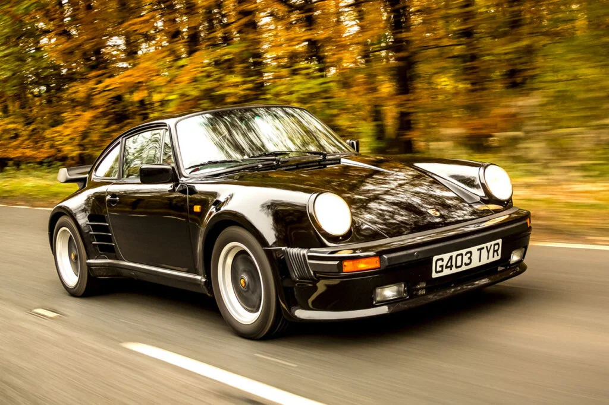
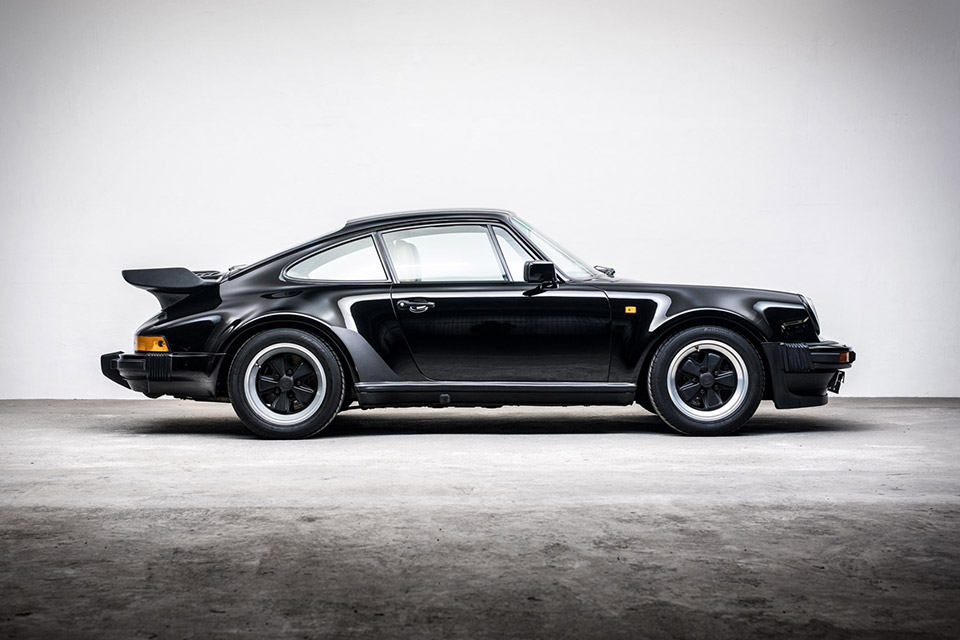

In the automotive world, few icons command as much respect and admiration as the 1980s Porsche 911 Turbo. Affectionately known as the "930," this turbocharged marvel emerged from Stuttgart with a mission to redefine performance and precision in the sports car realm.
With its distinctive wide body, rear whale tail spoiler, and signature round headlights, the 911 Turbo made an unmistakable statement on the road. But its true essence lay beneath the surface. Powered by a potent air-cooled, rear-mounted flat-six engine, the 930 delivered exhilarating bursts of power with each press of the throttle.
In the 1980s, turbocharging was still a relatively novel concept for production cars, and Porsche's implementation was nothing short of groundbreaking. The turbo lag, characteristic of early turbocharged engines, only added to the thrill as power surged with a ferocity that demanded respect and skill from its driver.
Behind the wheel, the 911 Turbo was a visceral experience. Its raw, unfiltered driving dynamics combined with razor-sharp handling to create a connection between man and machine that few other cars could match. With each twist of the winding roads or blast down the straightaways, the 930 showcased its prowess and cemented its status as a true enthusiast's car.
Beyond its performance credentials, the 911 Turbo also became a symbol of status and success, favored by celebrities, enthusiasts, and collectors alike. Its timeless design and legendary reputation have ensured its place in automotive history as a defining icon of the 1980s and a testament to Porsche's unwavering commitment to engineering excellence and driving pleasure.